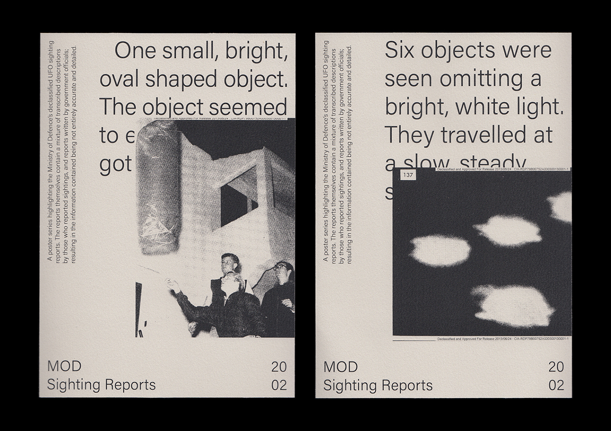
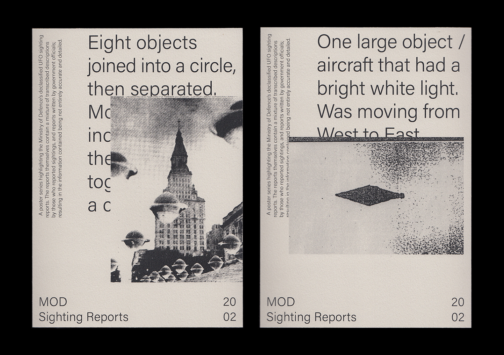

← Return
UK Sighting Reports
Supporting my research in to the Ministry of Defence Archives, I developed a series of prints which examine declassified UFO sighting reports from the year 2002. A web archive of all of these reports between the years 1997—2008 can also be viewed by visiting ufoarchive.co.uk

